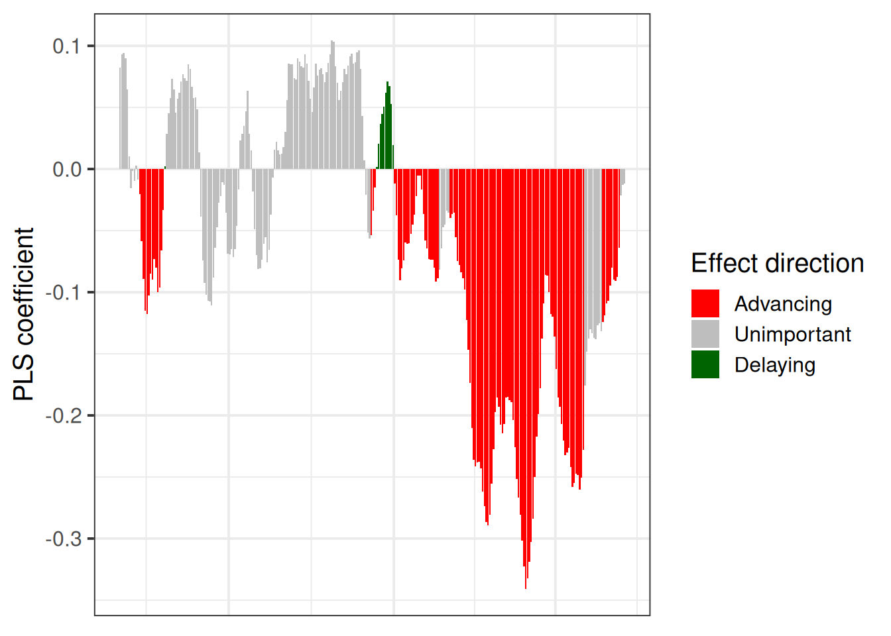

Chapter 21 Delineating temperature response phases with PLS regression
Learning goals for this lesson
- Understand the difference between simple regression approaches and the challenge to detect signals in noisy datasets
- Fully understand why relating high-resolution temperature records to phenology data is challenging
- Understand roughly what PLS regression does
- Be able to use the
PLS_phenofunction inchillR - Be able to use
ggplotto produce a nice figure of PLS results
21.1 Detecting temperature response phases
In the last lesson, we tried - somewhat unsuccessfully - to find simple relationships between temperature during particular periods and phenology. Based on what we already know about phenology, we shouldn’t be particularly surprised by this. Spring phenology responds to exposure to chilling temperatures over a considerable period, during which the precise timing of this exposure is probably not important. The same applies to heat. We thus shouldn’t expect temperature during a single well-defined period to explain much of the observed variation in bloom or leafing dates. It seems more likely that temperatures during longer periods have an effect, possibly with varying levels of effectiveness. Methods that either fully consider temperatures during particular intervals or completely discard them are then not very promising.
Another major problem is that we may have high-resolution temperature data, e.g. at daily or even hourly resolution, but we may not have a good way of correlating this to observed phenology. Statistically, this is because we are relating a small number of dependent variables - e.g. bloom dates, for which we usually just have one value per year - with a large number of independent variables - temperatures on each day, or during each hour, of the dormant season. Ordinary regression procedures don’t do well in such settings.
The statistical challenge we are encountering here is not unique, however. Wanting to explain relatively few observations with lots of independent variables is actually a pretty common challenge, for example in remote sensing, and researchers in several disciplines have found ways of dealing with it. Let’s take a quick trip to the context where I first encountered promising analysis techniques.
21.2 Finding signals in hyperspectral remote sensing data
I first worked with hyperspectral data in the context of a project in California, where we tried to detect spider mite damage in peaches (Luedeling et al., 2009c). Hyperspectral data often contain spectral reflectance (or absorption) data for radiation at hundreds (even thousands) of spectral wavelengths. Such spectra are then related to properties of particular materials. In our case, we had scored mite damage on 1132 peach leaves, for which we also collected reflectance spectra at wavelengths between 350 and 2500 nm.
The following image shows two distinct reflectance profiles that represent healthy (0% damage) and heavily affected (90% damage) leaves. As you can see, the healthy leaves reflected less light at wavelengths around 500 nm and more light in a wide region around 1000 nm. We can easily see that here, but there are also mathematical procedures for detecting the signals caused by a particular property of the material (in this case mite damage).
To identify significant wavelengths, we should not look at this as a regression exercise, but rather address the situation as a signal detection problem. There is a lot of noise in such datasets, and we’re looking for the signal that is produced by the property we’re trying to measure.
There are a number of methods to detect signals, and the blossoming machine learning literature keeps producing new ones. The method I adopted back then, and which we’re also going to learn about in this lesson, is Projection-to-Latent-Structures (PLS) regression, also known as Partial Least Squares regression. I prefer the complicated name, because it is more informative about what is going on. In principle, the method identifies latent structures, a sort of principal components, that best describe the variation in the dataset. These latent structures are then used in a regression procedure. I won’t talk about the mathematical details here, because that would be boring (and I also never fully understood them…) - what matters is that this is quite effective in identifying signals in noisy datasets, and it works in situations where we have lots of independent variables and just one dependent variable, for which we don’t necessarily need a lot of observations.
Here are the PLS results for the peach leaf dataset, relating reflectance to mite damage:

We can see here that certain wavelengths are particularly strongly correlated with spider mite damage, so it might be possible to construct some sort of mite detection index by concentrating on wavelengths around 365 nm, 497 nm, 687 nm and so forth. Well, in this case that didn’t work so well. Except for cases of extreme damage, we didn’t really manage to detect mites. Or as one of my colleagues in the project put it: “Yes, at some point you can detect mite damage, but at that point, you could also detect mites by driving past the orchard at 60 miles an hour and just looking out of the window”…
Well, fortunately, mite detection is not what we’re after here. What I want to point out is that the general statistical situation here is quite similar to the situation we’re facing when trying to relate high-resolution temperature to tree phenology. We have one dependent variable, just a few observations and lots of independent variables. So let’s see if PLS regression can help us with our temperature responses.
21.3 PLS regression for phenology analysis
I first tried this kind of analysis with leaf emergence data of the walnut cultivar ‘Payne’ in California (Luedeling & Gassner, 2012). We used PLS regression on a 54-year dataset, from 1953-2007 (with data for 1996 missing), recorded at the University of California at Davis.
We related these leaf emergence dates with mean daily temperature, obtaining the following results:
This figure shows three versions of the analysis. In the analysis that produced the topmost set of figures, unprocessed daily mean temperatures were related to phenology dates. The results looked a little fuzzy, so I also ran the analysis with an 11-day running mean of temperatures (middle) and also with monthly data (bottom). Each set of plots contains illustrations of two results: the model coefficients, which are comparable to the coefficients of a normal regression model, and the ‘variable importance in the projection’ score (VIP), which indicates how important the contribution of each daily temperature is for the overall regression model. This is often interpreted as a sort of ‘significance’, which is decided on by using a cut-off threshold (often 0.8).
So what do we see here? Basically, the model coefficients illustrate how leaf emergence dates are affected by particularly warm or cool conditions on a certain day. Positive model coefficients indicate a positive relationship between (Julian) leaf emergence dates and temperature, i.e. warmer than usual temperatures are correlated with later than usual leaf emergence dates. Conversely, negative model coefficients indicate a negative correlation, i.e. warm temperatures are related to early spring phenology.
When we relate the emerging pattern of model coefficients to our understanding of the dormancy process, we can detect two distinct phases here. Between early November and mid-January, we see a period with positive model coefficients (and high VIP scores), i.e. warm conditions during this period are related to delayed leaf emergence in spring. This is consistent with what we might expect to be happening during the chilling period, when warm conditions might delay the fulfillment of chilling requirements, which would in turn delay all subsequent development.
Following this period of positive model coefficients, we see a phase with negative coefficients between mid-January and (about) the end of March. Such coefficients are consistent with our expectation for the forcing phase, when warm temperatures would accelerate heat accumulation and thus advance leaf emergence.
After early to mid-April, we see an inconsistent pattern. Given that leaf emergence happens in March to very early April, this is not surprising. Temperatures after this time cannot possibly affect budbreak dates. We also see that temperature response patterns before November are inconsistent. This may indicate that no chill accumulates before the end of October.
We found quite similar patterns for the cultivars ‘Chandler’ and ‘Franquette’:
As you can see, the model coefficient patterns are a bit less clear here, including brief interruptions of the chilling period for the two other cultivars and lots of variation in heat and chilling responses. What does this mean?
21.4 A note of caution about PLS results
We always have to keep in mind what PLS is and what it can do. This is a data mining technique that is usually used with a lot larger datasets than what we have here. Remember that in the spider mite example, we had over 1000 leaf samples. The method also works with less data, but we should not expect results to be crystal-clear then. It is thus very important that we don’t overinterpret every little feature of the plots that emerges.
In fact, when we’re dealing with datasets as small as the ones we usually encounter in phenology analysis, I would strongly advise against using PLS as a data-mining tool, i.e. to detect patterns in the data. This tool should only be used in conjunction with a theory about how the system works. With this, we can use the PLS results to support or possibly refute certain ideas. In our case, we may start with a strong expectation of finding a chilling period (with positive model coefficients), followed by a forcing period (with negative coefficients). Our results are consistent with our theory, so - together with this theory - the picture that emerges is quite consistent.
Important: always keep in mind that we’re using PLS with a very small dataset and we should not place too much emphasis on individual characteristics of the emerging model coefficient patterns (unless of course, we have other reasons to believe they are meaningful, or we find them across many similar analyses).
In this context, it is important that we clarify our expectations before we run our analysis. It’s always possible to interpret random patterns that emerge in some reasonable-sounding way after the fact, but this practice - which is also known as rationalizing - isn’t particularly sound. It’s pretty common, however, in the discussions of machine-learning papers…
21.5 PLS analysis of ‘Alexander Lucas’ pears in Klein-Altendorf
Now let’s try this analysis for ourselves. We’ll work with the dataset of pears (cultivar ‘Alexander Lucas’) we already looked at before (you can download it in the Simple phenology analysis chapter). We’ll start with first bloom, which we first have to convert to Julian dates:
library(chillR)
Alex_first <- read_tab("data/Alexander_Lucas_bloom_1958_2019.csv") %>%
select(Pheno_year, First_bloom) %>%
mutate(Year = as.numeric(substr(First_bloom, 1, 4)),
Month = as.numeric(substr(First_bloom, 5, 6)),
Day = as.numeric(substr(First_bloom, 7, 8))) %>%
make_JDay() %>%
select(Pheno_year, JDay) %>%
rename(Year = Pheno_year,
pheno = JDay)| Year | pheno |
|---|---|
| 1958 | 122 |
| 1959 | 98 |
| 1960 | 101 |
| 1961 | 89 |
| 1962 | 117 |
| 1963 | 118 |
The PLS function we’ll use is a bit particular about the format of this data.frame, so I had to adjust the data.frame structure a bit and change the column names. Now we need temperature data, which we have also worked with before:
| DATE | YEARMODA | Year | Month | Day | Tmin | Tmax | Tmin_source | Tmax_source | no_Tmin | no_Tmax | JDay |
|---|---|---|---|---|---|---|---|---|---|---|---|
| 01-01-58 | 19580101 | 1958 | 1 | 1 | 5.0 | 7.50 | NA | NA | FALSE | FALSE | 1 |
| 02-01-58 | 19580102 | 1958 | 1 | 2 | 1.5 | 9.00 | NA | NA | FALSE | FALSE | 2 |
| 03-01-58 | 19580103 | 1958 | 1 | 3 | -5.5 | 1.10 | NA | NA | FALSE | FALSE | 3 |
| 04-01-58 | 19580104 | 1958 | 1 | 4 | -5.5 | 0.50 | NA | NA | FALSE | FALSE | 4 |
| 05-01-58 | 19580105 | 1958 | 1 | 5 | 3.5 | 2.75 | NA | NA | FALSE | TRUE | 5 |
| 06-01-58 | 19580106 | 1958 | 1 | 6 | 3.0 | 5.00 | NA | NA | FALSE | FALSE | 6 |
This data.frame can be more complex, but it needs to conform to the typical structure of chillR temperature datasets, i.e. it must have columns Year, Month, Day, Tmin, Tmax and in this case also JDay.
With these two inputs, we can now use the PLS_pheno function from the chillR package. I note here that this function makes use of the plsr package.
The PLS_pheno function requires as a minimum just a temperature dataset (weather_data) and a phenology dataset (bio_data). The result is a list of three objects: $object_type - just the string ‘PLS_Temp_pheno’, $pheno - the phenology input data, and $PLS_summary - the results we’re interested in.
| Date | JDay | Coef | VIP | Tmean | Tstdev |
|---|---|---|---|---|---|
| 801 | -152 | 0.0826036 | 0.3676590 | 18.32970 | 1.914004 |
| 802 | -151 | 0.0932920 | 0.4159775 | 18.30846 | 1.884389 |
| 803 | -150 | 0.0940262 | 0.4530441 | 18.27148 | 1.844368 |
| 804 | -149 | 0.0899057 | 0.4609463 | 18.23742 | 1.886276 |
| 805 | -148 | 0.0643769 | 0.4140336 | 18.19609 | 1.884567 |
| 806 | -147 | 0.0103315 | 0.4476572 | 18.17148 | 1.855337 |
This summary object contains 6 columns: Date- the calendar day coded as MMDD, JDay- the Julian date, Coef- the PLS model coefficient, VIP- the variable importance in the projection score, Tmean - the mean temperature on the respective day, and Tstdev the standard deviation of temperatures on this day across the whole temperature dataset.
This PLS_results element can now be plotted with the dedicated plotting function plot_PLS. Here’s what the results of this would look like:
chillRWhat you see here now is a bit prettier than the figures from the original PLS publication. We have the VIP plot on top, with ‘important’ days highlighted in blue. In the second row, we have the model coefficients, with data for all the days identified as ‘important’ shown in red (when negative) or green (when positive). In the bottom row, we see the temperature dynamics during this time, with the mean temperature across all years shown by the black line, and the standard deviation indicated by the shading, which uses the same color scheme as the model coefficient plot. The gray shading at the left end of the plot shows the full range of observed bloom dates, with the dashed line indicating the mean bloom date.
I hope you like how this figure looks - because you can’t really change much in it… It was also a lot of work to make this look ok. This is mainly because I put all of this together using the standard plotting functions in R, which (with my programming skills at the time) make it pretty difficult to produce complex figures. Since the sizes of all text elements and many other things had to be specifically modified, the only way to ensure acceptable outputs was to directly write the plot to an image file.
Before we reproduce this using ggplot, let’s look at the parameters of the PLS_pheno function.
split_month- thePLS_phenofunction uses temperature data for an entire year, but we can decide when to start this year. The default is 7, which means that the phenological year ends at the end of July.runn_mean- the running mean to be applied to the temperature data before the analysis. We can set this to 1, but then we get a fairly messy temperature response pattern. The default is 11, which has usually worked pretty well.end_at_pheno_end- if this is set toTRUE(the default), then temperatures after the latestJDayof the phenology dataset aren’t considered in the analysis.use_Tmean- this can be set toTRUE, if your temperature dataset has aTmeancolumn and you want to use that rather than calculating means fromTminandTMax.expl.var,ncomp.fixandcrossvalidaterefer to specifics of the PLS analysis,return.allindicates that you also want all the PLS outputs to be returned. Refer to the help function ofPLS_phenoand possibly to theplsrpackage for more details.
So now let’s make the same plot in ggplot:
library(ggplot2)
PLS_gg <- PLS_results$PLS_summary %>%
mutate(Month = trunc(Date / 100),
Day = Date - Month * 100,
Date = NULL)
PLS_gg$Date <- ISOdate(2002,
PLS_gg$Month,
PLS_gg$Day)
PLS_gg$Date[PLS_gg$JDay <= 0] <-
ISOdate(2001,
PLS_gg$Month[PLS_gg$JDay <= 0],
PLS_gg$Day[PLS_gg$JDay <= 0])
PLS_gg <- PLS_gg %>%
mutate(VIP_importance = VIP >= 0.8,
VIP_Coeff = factor(sign(Coef) * VIP_importance))
VIP_plot<- ggplot(PLS_gg,
aes(x = Date,y = VIP)) +
geom_bar(stat = 'identity',
aes(fill = VIP > 0.8))
VIP_plot <- VIP_plot +
scale_fill_manual(name="VIP",
labels = c("<0.8", ">0.8"),
values = c("FALSE" = "grey", "TRUE" = "blue")) +
theme_bw(base_size = 15) +
theme(axis.text.x = element_blank(),
axis.ticks.x = element_blank(),
axis.title.x = element_blank())
VIP_plotcoeff_plot <- ggplot(PLS_gg,
aes(x = Date,
y = Coef)) +
geom_bar(stat ='identity',
aes(fill = VIP_Coeff)) +
scale_fill_manual(name = "Effect direction",
labels = c("Advancing",
"Unimportant",
"Delaying"),
values = c("-1" = "red",
"0" = "grey",
"1" = "dark green")) +
theme_bw(base_size = 15) +
ylab("PLS coefficient") +
theme(axis.text.x = element_blank(),
axis.ticks.x = element_blank(),
axis.title.x = element_blank() )
coeff_plot
temp_plot <- ggplot(PLS_gg) +
geom_ribbon(aes(x = Date,
ymin = Tmean - Tstdev,
ymax = Tmean + Tstdev),
fill = "grey") +
geom_ribbon(aes(x = Date,
ymin = Tmean - Tstdev * (VIP_Coeff == -1),
ymax = Tmean + Tstdev * (VIP_Coeff == -1)),
fill = "red") +
geom_ribbon(aes(x = Date,
ymin = Tmean - Tstdev * (VIP_Coeff == 1),
ymax = Tmean + Tstdev * (VIP_Coeff == 1)),
fill = "dark green") +
geom_line(aes(x = Date,
y = Tmean)) +
theme_bw(base_size = 15) +
ylab(expression(paste(T[mean]," (°C)")))
temp_plotlibrary(patchwork)
plot<- (VIP_plot +
coeff_plot +
temp_plot +
plot_layout(ncol=1,
guides = "collect")
) & theme(legend.position = "right",
legend.text = element_text(size = 8),
legend.title = element_text(size = 10),
axis.title.x = element_blank())
plotThat was a bit of work, but now we have code that produces a nice compound figure that shows everything we expect of the outputs of a PLS analysis. So why not make a function from this?
ggplot_PLS <- function(PLS_results)
{
library(ggplot2)
PLS_gg <- PLS_results$PLS_summary %>%
mutate(Month = trunc(Date / 100),
Day = Date - Month * 100,
Date = NULL)
PLS_gg$Date <- ISOdate(2002,
PLS_gg$Month,
PLS_gg$Day)
PLS_gg$Date[PLS_gg$JDay <= 0] <-
ISOdate(2001,
PLS_gg$Month[PLS_gg$JDay <= 0],
PLS_gg$Day[PLS_gg$JDay <= 0])
PLS_gg <- PLS_gg %>%
mutate(VIP_importance = VIP >= 0.8,
VIP_Coeff = factor(sign(Coef) * VIP_importance))
VIP_plot<- ggplot(PLS_gg,aes(x=Date,y=VIP)) +
geom_bar(stat='identity',aes(fill=VIP>0.8))
VIP_plot <- VIP_plot +
scale_fill_manual(name="VIP",
labels = c("<0.8", ">0.8"),
values = c("FALSE" = "grey",
"TRUE" = "blue")) +
theme_bw(base_size=15) +
theme(axis.text.x = element_blank(),
axis.ticks.x = element_blank(),
axis.title.x = element_blank())
coeff_plot <- ggplot(PLS_gg,
aes(x = Date,
y = Coef)) +
geom_bar(stat ='identity',
aes(fill = VIP_Coeff)) +
scale_fill_manual(name = "Effect direction",
labels = c("Advancing",
"Unimportant",
"Delaying"),
values = c("-1" = "red",
"0" = "grey",
"1" = "dark green")) +
theme_bw(base_size = 15) +
ylab("PLS coefficient") +
theme(axis.text.x = element_blank(),
axis.ticks.x = element_blank(),
axis.title.x = element_blank())
temp_plot <- ggplot(PLS_gg) +
geom_ribbon(aes(x = Date,
ymin = Tmean - Tstdev,
ymax = Tmean + Tstdev),
fill = "grey") +
geom_ribbon(aes(x = Date,
ymin = Tmean - Tstdev * (VIP_Coeff == -1),
ymax = Tmean + Tstdev * (VIP_Coeff == -1)),
fill = "red") +
geom_ribbon(aes(x = Date,
ymin = Tmean - Tstdev * (VIP_Coeff == 1),
ymax = Tmean + Tstdev * (VIP_Coeff == 1)),
fill = "dark green") +
geom_line(aes(x = Date,
y = Tmean)) +
theme_bw(base_size = 15) +
ylab(expression(paste(T[mean]," (°C)")))
library(patchwork)
plot<- (VIP_plot +
coeff_plot +
temp_plot +
plot_layout(ncol=1,
guides = "collect")
) & theme(legend.position = "right",
legend.text = element_text(size = 8),
legend.title = element_text(size = 10),
axis.title.x = element_blank())
plot}
ggplot_PLS(PLS_results)
Now we have a function that can automatically plot the outputs of a PLS analysis. After solving this technical challenge, we can finally take a look at the results of our analysis… which do not look as expected. We see a strong bloom-advancing response to high temperatures in spring, but where is the chilling period? We’ll get to this in the next lesson, but maybe you already have some ideas?
Exercises on chill model comparison
Please document all results of the following assignments in your learning logbook.
- Briefly explain why you shouldn’t take the results of a PLS regression analysis between temperature and phenology at face value. What do you need in addition in order to make sense of such outputs?
- Replicate the PLS analysis for the Roter Boskoop dataset that you used in a previous lesson.
- Write down your thoughts on why we’re not seeing the temperature response pattern we may have expected. What happened to the chill response?